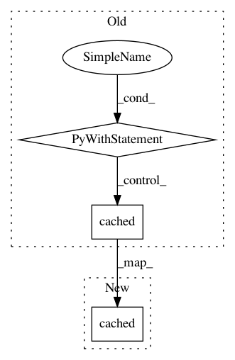

3b77f6b6c38fea6616cae10ca8e0c3a20782934a,tests/python/pants_test/java/distribution/test_distribution.py,LiveDistributionTest,test_validate_live,#LiveDistributionTest#,390
Before Change
Distribution(bin_path=os.path.dirname(self.JAVA), maximum_version="999.999.999").validate()
Distribution(bin_path=os.path.dirname(self.JAVA), minimum_version="1.3.1",
maximum_version="999.999.999").validate()
with subsystem_instance(DistributionLocator) as locator:
locator.cached(jdk=False)
@unittest.skipIf(not JAVAC, reason="No javac executable on the PATH.")
def test_validate_live_jdk(self):
Distribution(bin_path=os.path.dirname(self.JAVAC), jdk=True).validate()
Distribution(bin_path=os.path.dirname(self.JAVAC), jdk=True).binary("javap")
After Change
Distribution(bin_path=os.path.dirname(self.JAVA), minimum_version="1.3.1",
maximum_version="999.999.999").validate()
locator = global_subsystem_instance(DistributionLocator)
locator.cached(jdk=False)
@unittest.skipIf(not JAVAC, reason="No javac executable on the PATH.")
def test_validate_live_jdk(self):
Distribution(bin_path=os.path.dirname(self.JAVAC), jdk=True).validate()
In pattern: SUPERPATTERN
Frequency: 3
Non-data size: 3
Instances
Project Name: pantsbuild/pants
Commit Name: 3b77f6b6c38fea6616cae10ca8e0c3a20782934a
Time: 2016-09-12
Author: benjyw@gmail.com
File Name: tests/python/pants_test/java/distribution/test_distribution.py
Class Name: LiveDistributionTest
Method Name: test_validate_live
Project Name: pantsbuild/pants
Commit Name: 461bb39fbdd9f49ff21a6be038ffbd2e7ae622b0
Time: 2015-07-30
Author: mateorod9@gmail.com
File Name: tests/python/pants_test/android/test_android_distribution.py
Class Name: TestAndroidDistribution
Method Name: test_sdk_path_is_none
Project Name: pantsbuild/pants
Commit Name: 3b77f6b6c38fea6616cae10ca8e0c3a20782934a
Time: 2016-09-12
Author: benjyw@gmail.com
File Name: tests/python/pants_test/java/distribution/test_distribution.py
Class Name: LiveDistributionTest
Method Name: test_validate_live_jdk